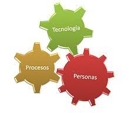
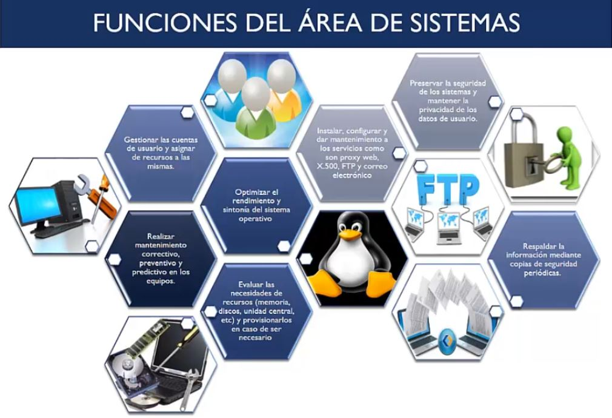

|  |  |
Actualmente trabajo en el area de IT/IS en una de las corporaciones avicolas mas grandes de Centro America, tengo experiencia en el desarrollo y analisis de sistemas de escritorio y actualmente me capacito en el desarrollo web, esto con el proposito de enriquecer mas mis conocimientos en el area y asi aportar a mi pais y a la sociedad algo de lo mucho que se puede aprender. Tengo conocomientos en lenguajes de programacion: como Visual basic, visual fox, visual net, java, etc. bases de datos como: My Sql, Sql Server, access y reporting service.